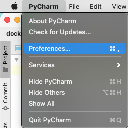
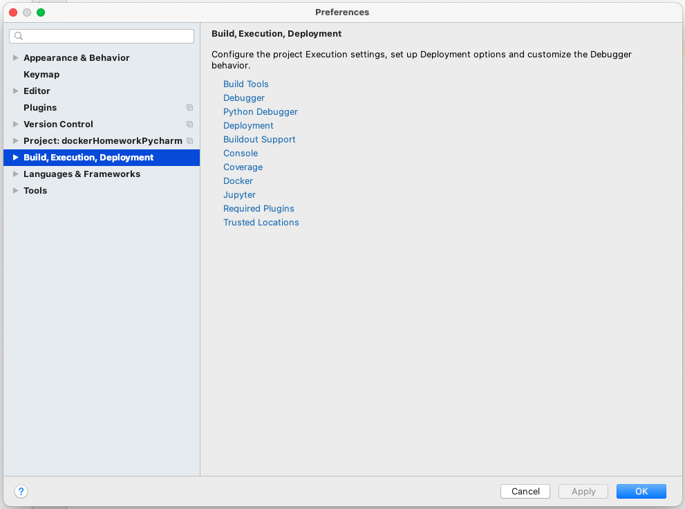
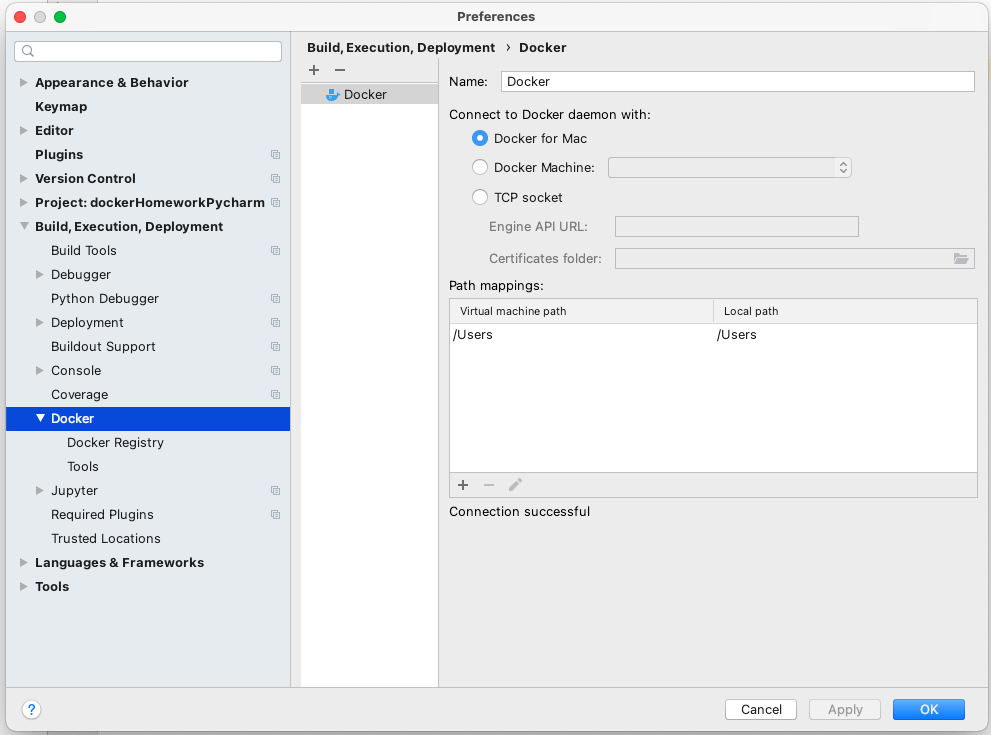
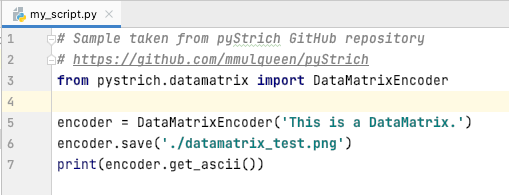
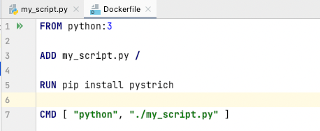
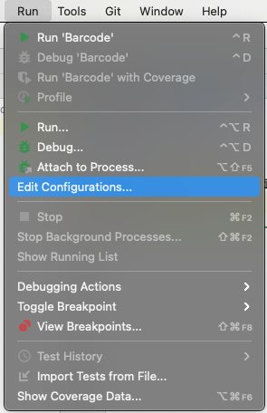
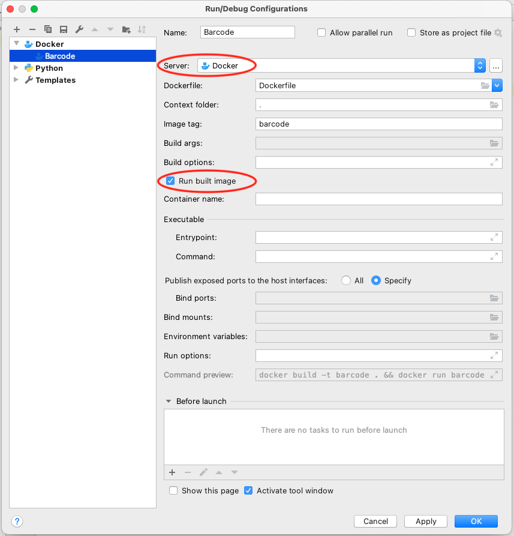
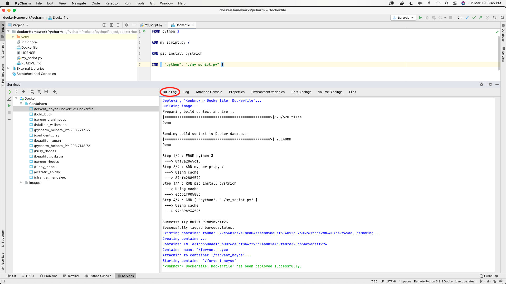
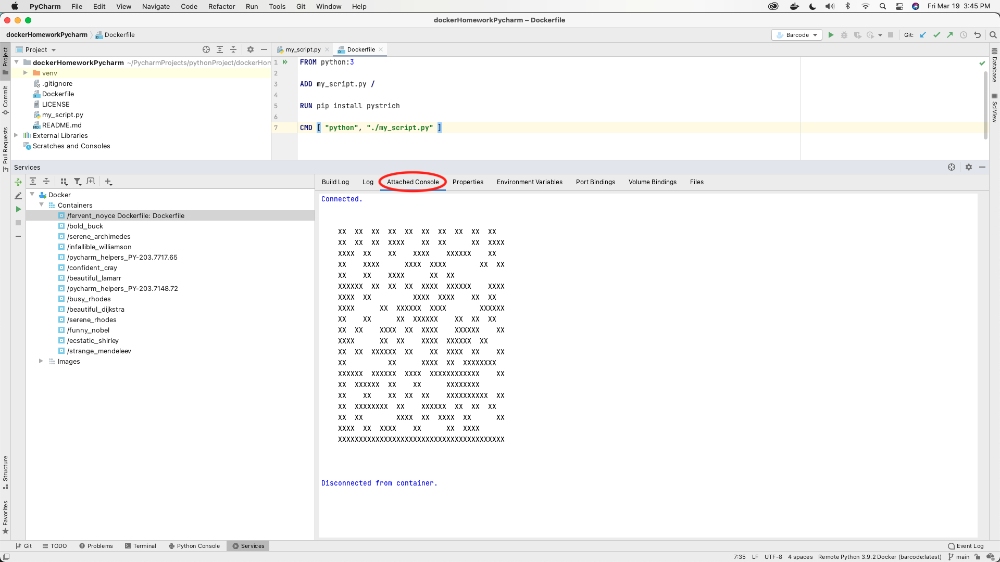
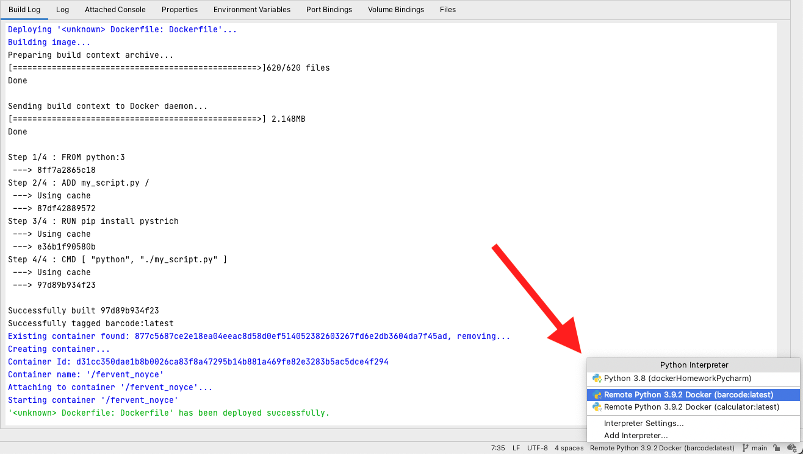

Connect Docker and Pycharm
Below you will find a tutorial to guide you through configuring Docker in Pycharm to write python code.
For this tutorial to work seamlessly, make sure that Docker is installed and running on your computer.
Now follow the instructions below.
Step 1 - Launch PyCharm
When launching PyCharm and after installing Docker, the Docker plugin will activate by default. If the
plugin is not activated, enable it under Preferences > Plugins > Docker.
Step 2 - Configure Docker in Pycharm
- Go to ‘Preferences’

- Go to ‘Build, Execution, Deployment’

- Choose Docker, and if you do not see Docker already configured, click the add (+) button.

Step 3 - Create a Python Project with Docker
- Create a Python project, and add a
my_script.py with your Python Script to it.

- Create a new file and name it
Dockerfile. Make sure that this file does not contain any
attachments or suffixes in the name or else this will not work.
- Add the following code to Dockerfile.

Step 4 - Run Docker
- Before running Docker, we need to configure the file to run in the container. To do so, in the menu
bar head to Run > Add/Edit Configurations.

- Make sure that under the server you have Docker selected, and that your Dockerfile is selected under
“Dockerfile”. Don’t forget to select “Run built image.”

- Finally, after all your settings and configurations are in place, you can hit run.
- A “Services” tab will pop up when you hit “Run”. Under the Services tab, you will find two subtabs,
“Build Log” and “Attached Console”. In the first, you will find information about your build and
container’s process. The second tab will show you the results of running your python code.

- Following the example that we followed, our Python module will produce the following barcode that
can be seen in the Attached Console.

- If you have any difficulties, make sure that you have the right interpreter selected..
